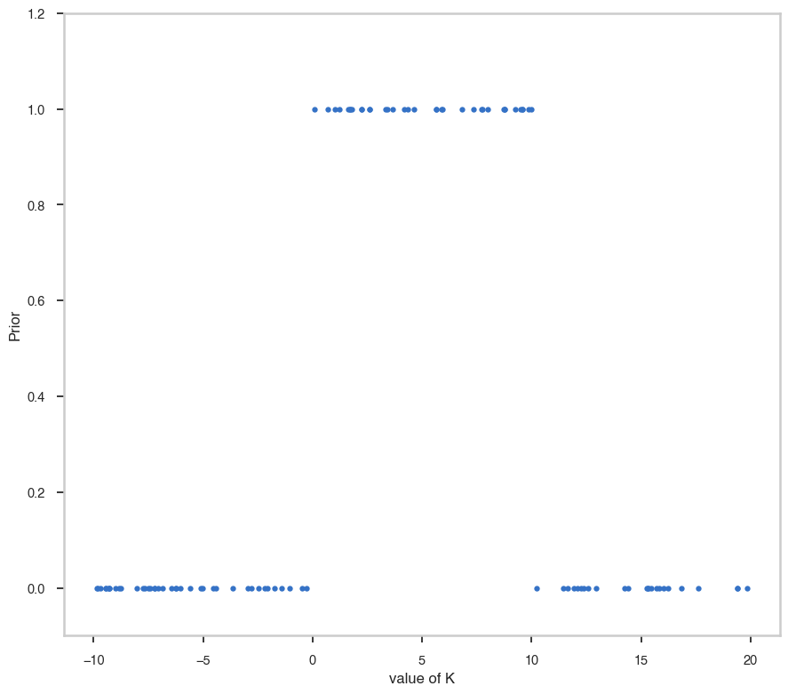
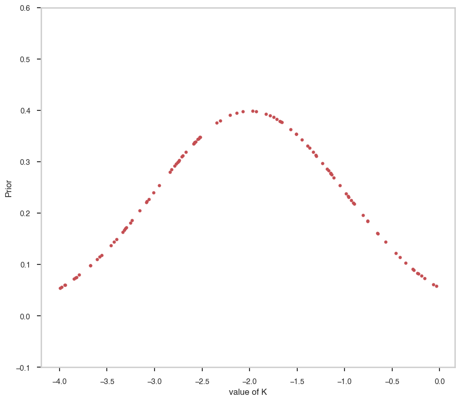

Priors for Bayesian analysis
Astromodels supports the definition of priors for all parameters in your model. You can use as prior any function (although of course not all functions should be used this way, but the choice is up to you).
First let’s define a simple model containing one point source (see the “Model tutorial” for more info):
[1]:
%%capture
from astromodels import *
# Create a point source named "pts1"
pts1 = PointSource('pts1',ra=125.23, dec=17.98, spectral_shape=Powerlaw())
# Create the model
my_model = Model(pts1)
Now let’s assign uniform priors to the parameters of the powerlaw function. The function uniform_prior is defined like this:
[2]:
Uniform_prior.info()
- description: A function which is constant on the interval lower_bound - upper_bound and 0 outside the interval. The extremes of the interval are counted as part of the interval.
- formula: $ f(x)=\begin{cases}0 & x < \text{lower_bound} \\\text{value} & \text{lower_bound} \le x \le \text{upper_bound} \\ 0 & x > \text{upper_bound} \end{cases}$
- default parameters:
- lower_bound:
- value: 0.0
- desc: Lower bound for the interval
- min_value: -inf
- max_value: inf
- unit:
- is_normalization: False
- delta: 0.1
- free: True
- upper_bound:
- value: 1.0
- desc: Upper bound for the interval
- min_value: -inf
- max_value: inf
- unit:
- is_normalization: False
- delta: 0.1
- free: True
- value:
- value: 1.0
- desc: Value in the interval
- min_value: None
- max_value: None
- unit:
- is_normalization: False
- delta: 0.1
- free: True
- lower_bound:
We can use it as such:
[3]:
# Set 'lower_bound' to 0, 'upper bound' to 10, and leave the 'value' parameter
# to the default value
pts1.spectrum.main.Powerlaw.K.prior = Uniform_prior(lower_bound = 0, upper_bound=10)
# Display it
pts1.spectrum.main.Powerlaw.K.display()
Parameter K = 1.0 [1 / (cm2 keV s)]
(min_value = 1e-30, max_value = 1000.0, delta = 0.1, free = True) [prior: Uniform_prior]
Now, lets’s set a Gaussian prior on the spectral index
[4]:
pts1.spectrum.main.Powerlaw.index.prior = Gaussian(mu=-2, sigma=1)
pts1.spectrum.main.Powerlaw.index.display()
Parameter index = -2.01 []
(min_value = -10.0, max_value = 10.0, delta = 0.20099999999999998, free = True) [prior: Gaussian]
[5]:
# Let's get 500 points uniformly distributed between -20 and 20
import numpy as np
import matplotlib.pyplot as plt
%matplotlib inline
from jupyterthemes import jtplot
jtplot.style(context="talk", fscale=1, ticks=True, grid=False)
random_points = np.random.uniform(-10,20,100)
fig, ax = plt.subplots()
ax.plot(random_points,pts1.spectrum.main.Powerlaw.K.prior(random_points), '.' )
ax.set_ylim([-0.1,1.2])
ax.set_xlabel("value of K")
ax.set_ylabel("Prior")
[5]:
Text(0, 0.5, 'Prior')

[6]:
random_points = np.random.uniform(-4,0,100)
fig, ax = plt.subplots()
ax.plot(random_points,pts1.spectrum.main.Powerlaw.index.prior(random_points), 'r.' )
ax.set_ylim([-0.1,0.6])
ax.set_xlabel("value of K")
ax.set_ylabel("Prior")
[6]:
Text(0, 0.5, 'Prior')

[ ]: